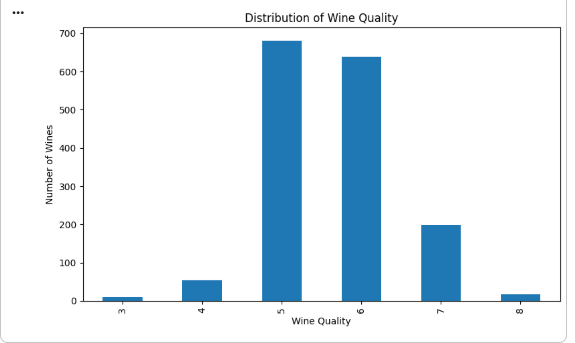
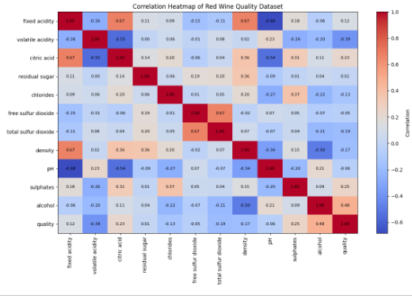
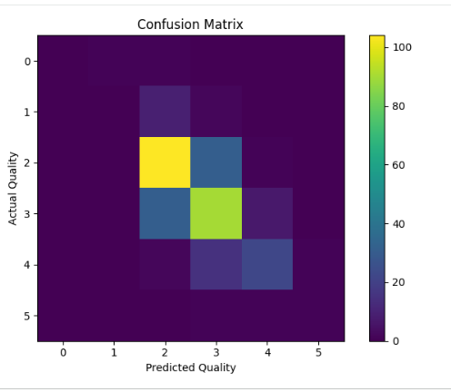
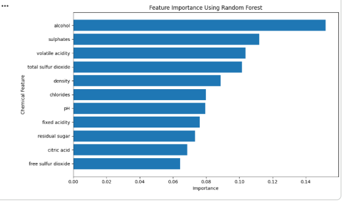
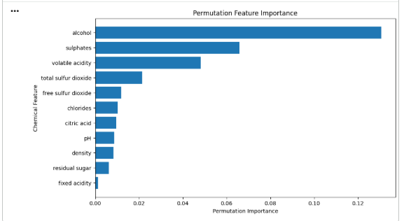

Frontend
HTML, CSS and JavaScript
Feature Importance Analysis for Wine Quality Using Random Forest
This project uses Machine Learning to predict red wine quality based on its chemical properties.
A Random Forest Classifier analyzes 11 input features, including alcohol, acidity, density and sulphates.
HTML, CSS and JavaScript
Python and FastAPI
Scikit-learn and Random Forest
Dataset: Red Wine Quality Dataset
Total samples: 1,599
Input features: 11
Model accuracy: 67.81% on the evaluated test set
Feature importance helps us understand which chemical measurements were most useful to the trained model. Alcohol, sulphates and volatile acidity were among the leading features in our model.
DATA VISUALIZATION
Explore the distribution of wine quality scores, relationships between chemical properties, and the performance of our Random Forest model.
Shows the number of wine samples for each quality score in the dataset.

Shows the relationships between the chemical properties and wine quality.

Compares actual wine quality scores with the quality scores predicted by the model.

Shows the relative importance of the 11 chemical features in the trained model.

Shows how model performance changes when individual features are shuffled.
